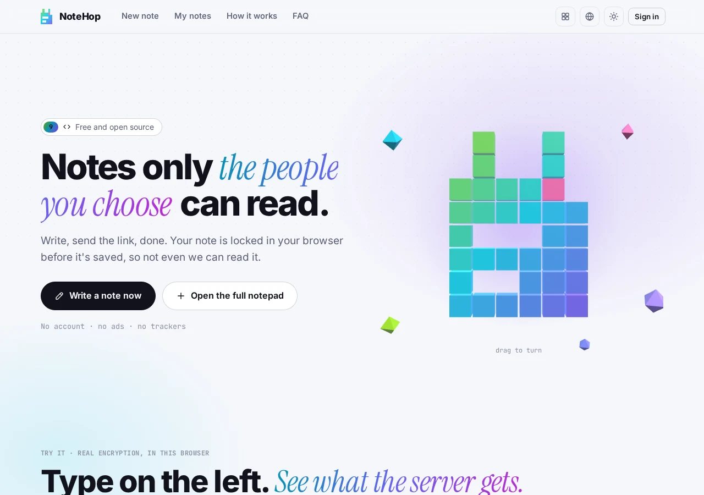
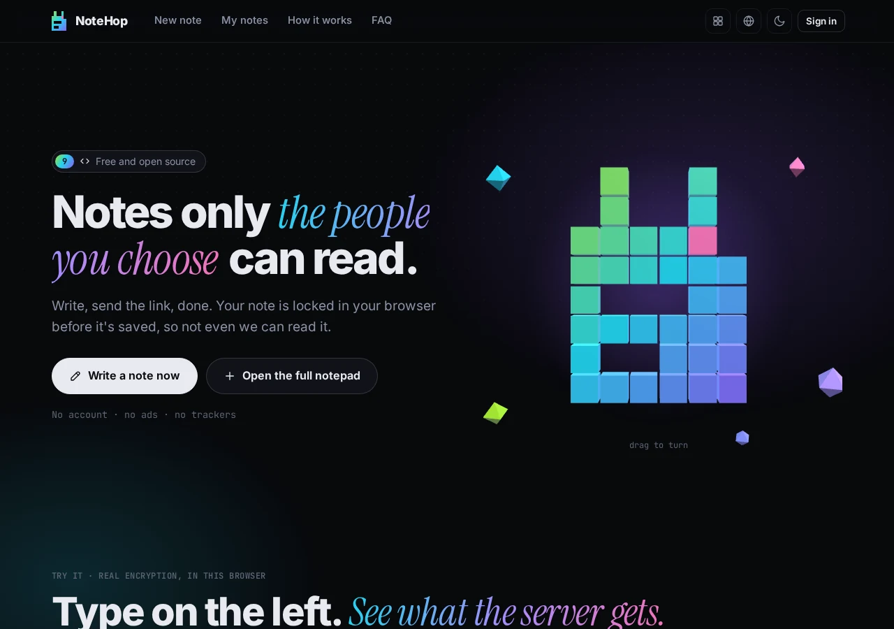

HOP · Notes et documents chiffrés
Verrouillé dans votre navigateur, partagé en quelques secondes
NoteHop chiffre vos notes localement avec AES-256-GCM avant qu’elles ne quittent votre appareil. La clé réside dans le fragment d’URL (#), rendant le serveur incapable de lire vos données. Liens courts et propres sur n.hel.ink, open source (MIT).
Les adresses actives sur cette page renvoient aux sites publics de la famille HOP.
Ce que propose NoteHop
- Chiffrement côté client AES-256-GCM
Votre navigateur verrouille le contenu avant tout envoi. La clé de déchiffrement voyage dans le fragment (#) et n’est jamais transmise au serveur.
- Serveur à zéro connaissance (Zero-knowledge)
Le serveur ne conserve que des blocs chiffrés. Même les administrateurs ou les sauvegardes ne peuvent inspecter vos écrits.
- Autodestruction et lecture unique
Les notes peuvent s’autodétruire dès leur première ouverture ou expirer après 10 minutes, 1 heure, 1 jour ou 30 jours.
- Permissions modulables par lien
Créez plusieurs liens pour une même note : propriétaire, lecture seule, modification, réponses seules ou cases à cocher seules.
- Collaboration en temps réel
Travaillez à plusieurs via des relais WebSocket tout en conservant un chiffrement complet de bout en bout.
- Formats de notes variés
Texte Markdown, listes interactives, sondages, formulaires, code coloré et pages web encapsulées.
- Connexion unique : HOP ID
Connectez-vous avec votre compte SSO HOP ID sur l’ensemble de la famille HOP, ou utilisez NoteHop en mode invité.
- Binaire Go unique auto-hébergeable
Binaire autonome léger (~16 Mo) avec SQLite intégré, sans dépendances d’exécution externes.
Auto-hébergement
Les adresses actives sur cette page renvoient aux sites publics de la famille HOP.
NoteHop


FAQ
Le serveur ou l’hébergeur peut-il lire mes notes ?
Non. Le chiffrement s’exécute entièrement dans votre navigateur via Web Crypto AES-256-GCM. La clé secrète réside dans l’ancre de l’URL (#) et ne parvient jamais au serveur.
Que se passe-t-il si je perds le lien de ma note ?
Puisque NoteHop est à zéro connaissance et ne possède aucune porte dérobée, la perte du lien rend la note définitivement irrécupérable.
Puis-je héberger NoteHop sur mon propre serveur ?
Oui. NoteHop se compile en un unique binaire autonome en Go sans dépendances externes. Consultez le README du dépôt.
Où signaler un problème ou une faille de sécurité ?
Ouvrez un ticket sur GitHub ou écrivez à security@hel.ink pour une divulgation responsable.
La famille HOP
NoteHop fait partie de HOP, une suite légère d’outils auto-hébergeables avec authentification unifiée.
| Application | Description | Service en ligne | Code source |
|---|---|---|---|
| HOP ID | Authentification unique, gestion de compte et sécurité | hel.ink · hub.hel.ink | navi-crwn/HEL.ink |
| LinkHop | Raccourcisseur d’URL rapide et respectueux de la vie privée avec statistiques | link.hel.ink · hel.ink/l/{slug} | navi-crwn/LinkHop |
| BioHop | Pages link-in-bio légères avec codes QR et thèmes | bio.hel.ink · hel.ink/b/{slug} | navi-crwn/BioHop |
| PixelHop | Hébergement d’images rapide et privé avec studio photo | pixel.hel.ink · p.hel.ink | navi-crwn/PixelHop |
| NoteHop | Notes chiffrées de bout en bout avec autodestruction | note.hel.ink · n.hel.ink | navi-crwn/NoteHop (ce dépôt) |
Besoin d’aide ou problème rencontré ?
Questions, suggestions et retours de bugs sont les bienvenus sur notre gestionnaire de tickets GitHub .